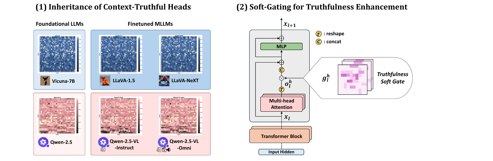
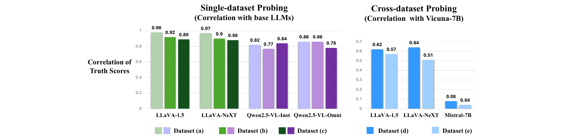
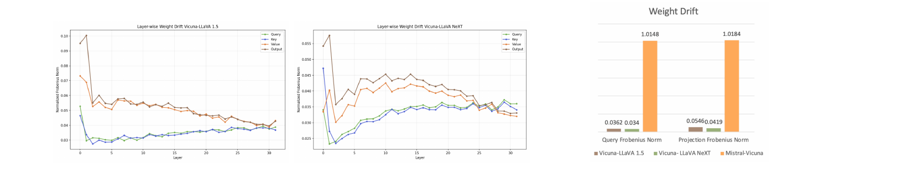
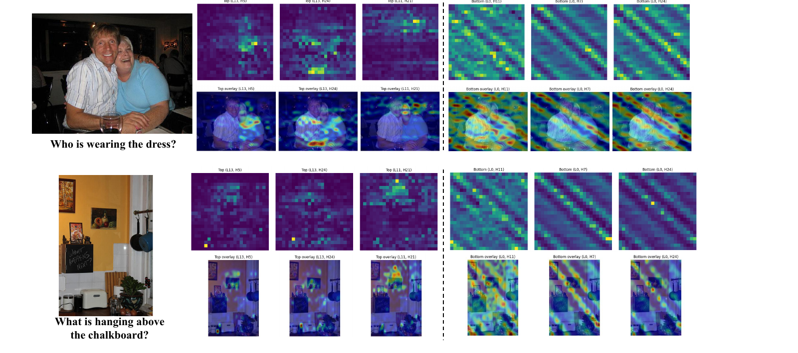

Truthfulness traits are inherited across model lineages. (1) Head-level Truth Score heatmaps show that fine-tuned MLLMs (LLaVA-1.5, LLaVA-NeXT, Qwen2.5-VL-Instruct, Qwen2.5-VL-Omni) preserve the truthfulness structure of their foundational LLMs (Vicuna-7B, Qwen2.5). (2) TruthProbe amplifies context-truthful heads via a soft gate glh on the residual pathway, without discarding the contribution of any head.
Recent advances in large language models (LLMs) have produced many specialized multimodal LLMs (MLLMs) that share common foundational LLMs, forming distinct model lineages. It remains unclear whether a fundamental behavioral link exists between the foundational LLMs and downstream variants. We investigate this question by quantifying head-level context-truthfulness scores. Across diverse LLM and MLLM lineages, including Vicuna-, Qwen2.5-, LLaMA2-, and Mistral-based models, we find that Truth Scores are strongly preserved within model families, even after instruction tuning or multimodal adaptation. We further show that this inheritance is consistent with attention-head weight preservation, and that context-truthful heads attend to query-relevant evidence. Building on this finding, we propose TruthProbe, a soft-gating strategy that amplifies context-truthful heads while preserving other head contributions. TruthProbe improves contextual truthfulness on HaluEval and reduces multimodal hallucination on POPE and CHAIR, with base-LLM Truth Scores transferring effectively to their fine-tuned LLM and MLLM descendants.
Truthful heads are inherited within model families. Truth Scores of base LLMs correlate strongly (0.77–0.98) with their multimodal descendants — even under cross-dataset probing — while unrelated families (e.g., Mistral-7B) show near-zero correlation (0.04–0.08) with Vicuna-7B.
Inheritance follows weight preservation. Within-family fine-tuning induces minor attention-head weight drift (Frobenius norm ≈ 0.03), while cross-family drift is far larger (≈ 1.01), explaining why truthfulness structure is preserved in a lineage.
Truthful heads attend to query-relevant evidence. Top truthful heads show semantically meaningful, query-dependent attention over visual regions, whereas non-truthful heads exhibit largely position-dependent, query-agnostic patterns.

Correlation of Truth Scores under single- and cross-dataset probing. Left: Within the same model family, Truth Scores remain highly correlated between base LLMs and their multimodal descendants across different probing setups. Right: This alignment persists under cross-dataset probing within the Vicuna family, whereas the unrelated Mistral-7B shows near-zero correlation.

Mechanistic evidence: inheritance follows weight preservation. Left/middle: layer-wise Frobenius norm of weight differences between Vicuna-7B and its multimodal variants — drift concentrates in early layers. Right: within-family weight drift (Vicuna-7B → LLaVA-1.5/NeXT) is roughly 30× smaller than cross-family drift (Vicuna-7B vs. Mistral-7B).
Building on the inheritance property above, we introduce TruthProbe: a lightweight, plug-and-play soft-gating strategy that reweights the residual contribution of each attention head in proportion to its Truth Score. Unlike hard masking, which discards information from untrusted heads, TruthProbe preserves the expressive capacity of multi-head attention while softly steering the residual stream toward context-faithful signals.
Here glh is the soft gate for head h at layer l, parameterized by the normalized Truth Score S and scaled by λ. Heads with higher Truth Scores are amplified beyond baseline, while less informative heads are relatively attenuated — all heads remain active throughout. Crucially, Truth Scores estimated once from a base LLM can be reused as a plug-and-play gate for its fine-tuned LLM and MLLM descendants, without probing each downstream model from scratch.
| Model | Acc | F1 | Prec | Rec |
|---|---|---|---|---|
| Vicuna-7B | ||||
| Baseline | 38.89 | 13.37 | 22.93 | 9.44 |
| + TruthProbeLLM | 38.53 | 29.15 | 34.38 | 25.30 |
| Qwen2.5 | ||||
| Baseline | 27.65 | 36.69 | 32.60 | 41.96 |
| + TruthProbeLLM | 35.04 | 46.54 | 39.52 | 56.59 |
| Model | Acc | F1 | Prec | Rec |
|---|---|---|---|---|
| Qwen2.5-7B-Instruct (base: Qwen2.5-7B) | ||||
| Baseline | 34.90 | 16.29 | 22.79 | 12.68 |
| + TruthProbeBase LLM | 37.35 | 17.24 | 25.36 | 13.05 |
| Vicuna-7B (base: LLaMA2-7B) | ||||
| Baseline | 38.89 | 13.37 | 22.93 | 9.44 |
| + TruthProbeBase LLM | 48.47 | 57.17 | 48.90 | 68.82 |
| Model | POPE (COCO) | POPE (A-OKVQA) | ||||
|---|---|---|---|---|---|---|
| LLaVA-1.5 (base: Vicuna-7B) | ||||||
| Baseline | 86.9 | 85.8 | 79.1 | 86.3 | 86.5 | 87.8 |
| + TruthProbeLLM | 86.7 | 85.8 | 80.1 | 85.7 | 86.3 | 90.1 |
| + TruthProbeMLLM | 86.8 | 85.8 | 79.6 | 86.1 | 86.5 | 89.0 |
| LLaVA-NeXT (base: Vicuna-7B) | ||||||
| Baseline | 87.7 | 86.5 | 78.8 | 87.4 | 87.4 | 86.8 |
| + TruthProbeLLM | 88.3 | 87.3 | 80.9 | 87.7 | 88.0 | 89.7 |
| + TruthProbeMLLM | 88.2 | 87.2 | 80.1 | 87.7 | 87.9 | 89.5 |
| Qwen2.5-VL-Instruct (base: Qwen2.5) | ||||||
| Baseline | 87.6 | 86.3 | 78.2 | 87.4 | 87.2 | 86.0 |
| + TruthProbeLLM | 88.1 | 87.0 | 79.9 | 87.8 | 87.8 | 87.7 |
| + TruthProbeMLLM | 88.1 | 87.0 | 80.0 | 87.7 | 87.7 | 87.4 |
| Qwen2.5-VL-Omni (base: Qwen2.5) | ||||||
| Baseline | 85.1 | 84.7 | 75.0 | 87.0 | 87.4 | 84.7 |
| + TruthProbeLLM | 87.3 | 86.0 | 77.7 | 87.8 | 87.8 | 87.1 |
| + TruthProbeMLLM | 87.1 | 85.7 | 77.3 | 87.7 | 87.6 | 86.7 |
| Model | CHAIRI | CHAIRS |
|---|---|---|
| LLaVA-1.5 | ||
| Baseline | 6.99 | 23.00 |
| + TruthProbeLLM | 5.36 | 17.40 |
| + TruthProbeMLLM | 6.20 | 21.60 |
| LLaVA-NeXT | ||
| Baseline | 6.91 | 13.40 |
| + TruthProbeLLM | 4.94 | 11.20 |
| + TruthProbeMLLM | 6.56 | 12.60 |
| Qwen2.5-VL-Instruct | ||
| Baseline | 6.14 | 13.20 |
| + TruthProbeLLM | 5.56 | 12.20 |
| + TruthProbeMLLM | 5.26 | 7.80 |
| Qwen2.5-VL-Omni | ||
| Baseline | 5.26 | 11.40 |
| + TruthProbeLLM | 5.94 | 10.80 |
| + TruthProbeMLLM | 5.54 | 11.00 |
Bold = best per model group. TruthProbeLLM/TruthProbeBase LLM use Truth Scores transferred from the base LLM; TruthProbeMLLM uses Truth Scores probed directly from the MLLM itself — the two are consistently comparable, confirming transferability.
Using relative attention maps to remove attention-sink artifacts, we compare the Top-3 truthful heads against the Bottom-3 non-truthful heads in LLaVA-1.5. Truthful heads exhibit semantically meaningful, query-dependent attention — focusing on the referenced object or person — while non-truthful heads show largely position-dependent, diagonal/striped attention that barely changes across queries.

Attention pattern comparison between truthful and non-truthful heads. Left three columns: Top-3 truthful heads. Right three columns: Bottom-3 non-truthful heads. Row 1: 24×24 attention maps from the final query token to visual tokens. Row 2: attention overlaid on the image.
@inproceedings{choi2026truth,
title = {The Truth Stays in the Family: Enhancing Contextual Truthfulness via Inherited Heads in Model Lineages},
author = {Choi, Miso and Choi, Seonga and Kwon, Mincheol and Joung, Woosung and Kim, Jinkyu and Lee, Jungbeom},
booktitle = {Proceedings of the 43rd International Conference on Machine Learning (ICML)},
series = {Proceedings of Machine Learning Research},
volume = {306},
year = {2026},
publisher = {PMLR},
address = {Seoul, South Korea}
}